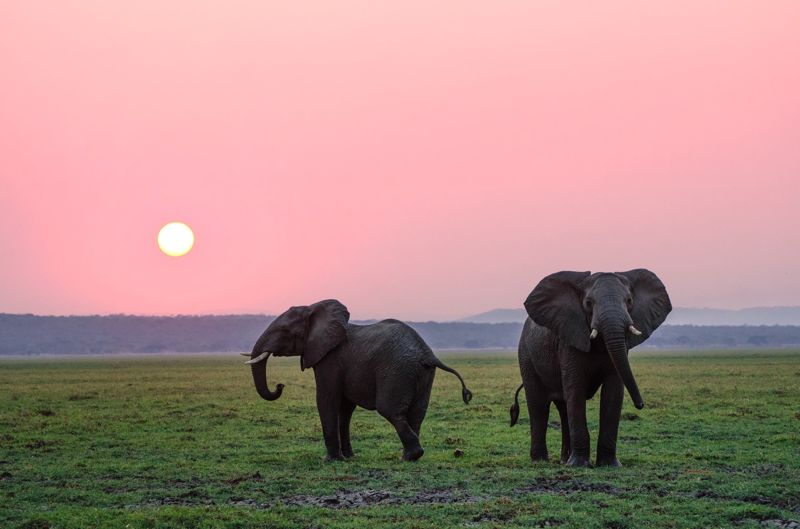
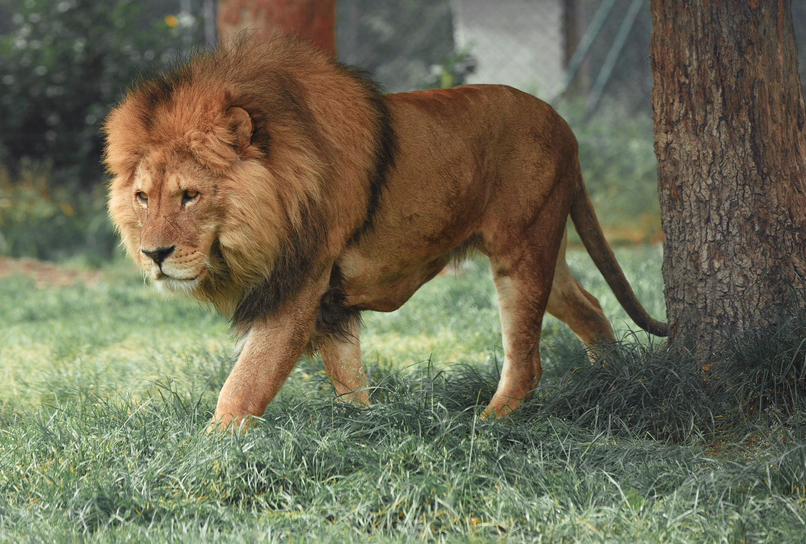
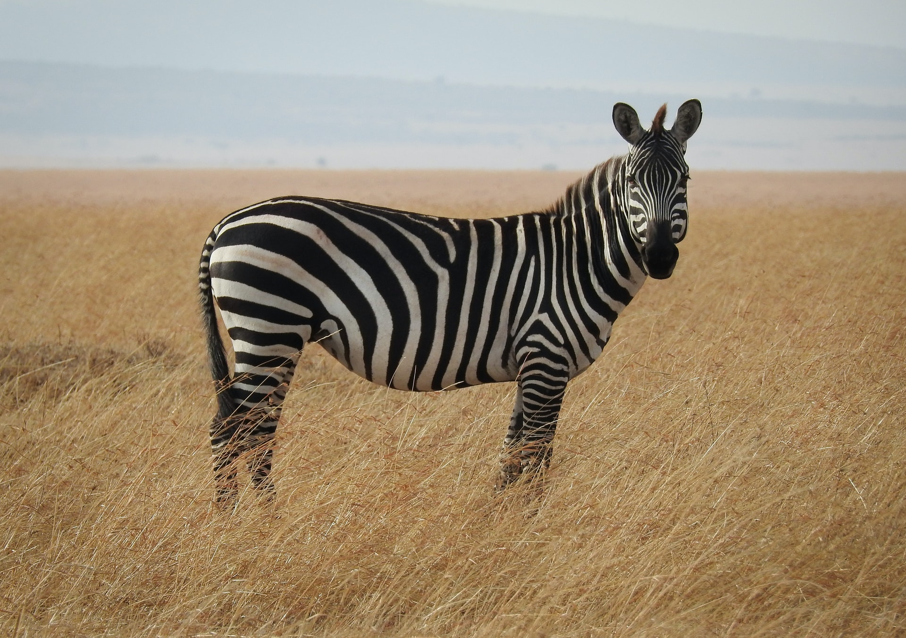
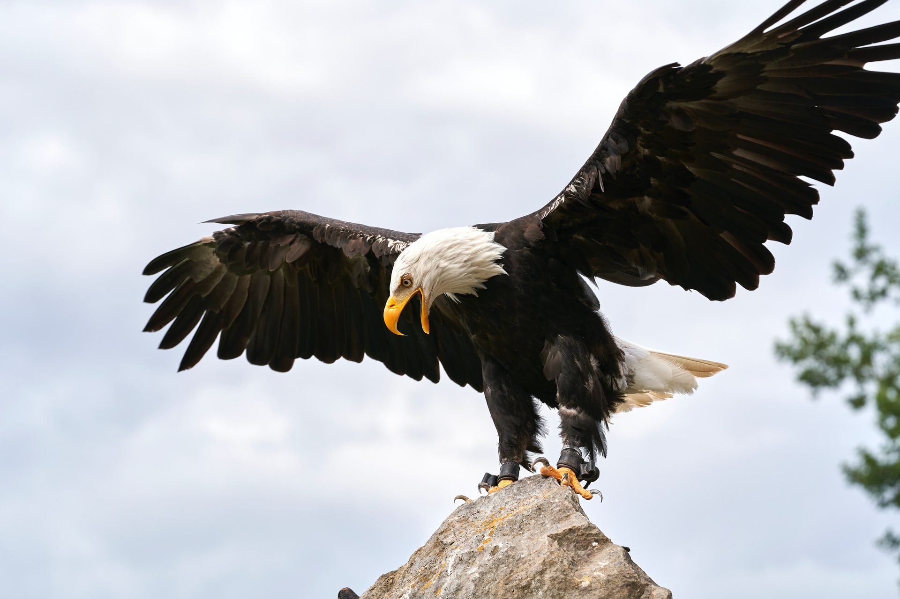

Fil
Fil, hortumlular takımının filgiller (Elephantidae) familyasını oluşturan memeli bir hayvandır.

Aslan
Aslan (Panthera leo), Panthera cinsindeki büyük kedilerden biridir ve kedigiller (Felidae) ailesinin bir üyesidir..

Zebra
Zebra Afrika'da bulunan ve atgiller (Equidae) familyasında sınıflandırılan gövdelerinin tamamını kaplayan ayırt edici siyah ve beyaz çizgilere sahip birkaç canlı türünün ortak adıdır.

Kartal
Kartallar, atmacagiller (Accipitridae) familyasına üyedir. Kartal türleri çok geniş bir yelpazede dağılan yırtıcı kuşları kapsar.